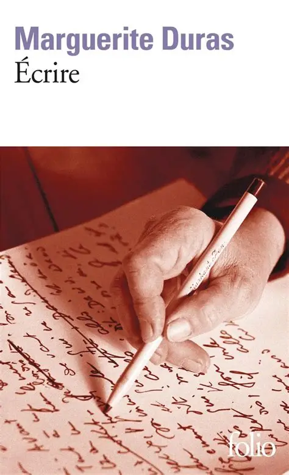

Écrire — Marguerite Duras
Étrange, long et bien à la fois

Écrire est un recueil de cinq textes très courts, où Duras revient sur son rapport à l’écriture, à la mort et à la mémoire. J’en ressors avec un avis partagé : deux textes que j’ai aimés, un qui m’a perdu, un qui m’a laissé indifférent, et un dernier que je n’ai pas compris.Écrire
Le texte qui donne son titre au recueil est une exploration d’elle-même et de son rapport à l’écriture. Elle revient sur sa maison de Neauphle et parle beaucoup du silence, de cet isolement que produit l’écriture et qui lui sert. « Écrire, c’est aussi ne pas parler. C’est se taire. C’est hurler sans bruit. » Elle dit aussi la difficulté d’écrire : « un état de douleur sans souffrance ».
L’écriture est simple et facile à comprendre, et pourtant on garde un étrange sentiment à la lecture. J’apprécie. Peu à peu, dans cette solitude, elle devient folle : elle regarde une mouche mourir, longuement, se demandant d’où viendra la mort, de quel côté, sans jamais aider la mouche. Elle n’avait jamais raconté cet épisode. La phrase la plus énigmatique du texte : « On écrit à regarder une mouche mourir. On a le droit de le faire. »
Il n’y a pas grand-chose à retenir de ces quarante pages. On a l’impression d’un assemblage de mots, les uns à la suite des autres, et j’y vois davantage une tentative de décrire l’acte d’écrire que l’envie de raconter une histoire (à moins que ce ne soit une mise en abyme). Cela reste très poétique.
La mort d’un jeune aviateur anglais
L’histoire se passe à Vauville. Elle lui vient en regardant un tombeau dont la seule inscription est « Jeune aviateur anglais ». Histoire touchante d’un vieil Anglais qui est venu voir la tombe chaque année pendant huit ans, puis un jour n’est pas revenu.
L’aviateur s’est écrasé dans la forêt à vingt ans. Les gens du village l’ont pleuré, car il est à la fois un et tout : une sorte de soldat inconnu, auquel les vivants s’attachent parce qu’il rappelle ceux qui sont partis sans laisser de trace nette (une tombe). Duras pense ici à son frère, mort pendant la guerre du Japon. « Il était enfant, à vingt ans. Il est mort comme un enfant, libre dans son avion et heureux de faire la guerre comme tous les enfants. »
La nouvelle est très liée à la notion d’écriture, encore plus courte que la précédente et plus nostalgique. Je l’ai lue en vitesse, sans trop comprendre, en passant sur les mots : une lecture de plaisir, comme aurait dit Barthes. Je pense pourtant qu’elle a un vrai potentiel, qu’elle contient une richesse incommensurable en aussi peu de mots. Je n’ai pas eu la force d’en déceler tous les secrets, mais d’autres sauront. C’est sa taille qui la sauve : sinon, j’aurais abandonné.
Roma
J’ai bien aimé le début, ce « temps » et ces « silences » qui émaillent le texte. Mais j’ai décroché. Les phrases sont très courtes, trop courtes. C’est un texte qui demande un véritable effort, une vraie plongée, d’autant que la conversation est sans sens, déliée, sans cohérence interne. Les choses existent et n’existent pas, elles bougent, changent, aussi fluides que l’écriture qu’elle met en place. Je le verrais presque comme une mise en abyme de l’écriture. Le texte aurait gagné à être raccourci au début, bien qu’il soit déjà très court. Les dialogues viennent toutefois rafraîchir la nouvelle.
Le nombre pur
« Elle a peur d’être allemande, l’Allemagne », fait-elle dire en référence au IIIe Reich. Le texte est très engagé, le seul du recueil à l’être à ce point. Elle parle du « pur » chez les Juifs d’abord, dont on a brûlé le passé, puis chez les Allemands, la « race pure », qui s’est elle aussi effondrée. Elle relie tout cela à la fermeture des usines Renault et propose de dresser la liste de tous ceux qui ont consacré leur vie à l’entreprise : juste leur nombre, car il n’y a que cela qui compte, le nombre pur.
L’exposition de la peinture
Pas de commentaire sur cette dernière nouvelle, sinon que c’est l’histoire d’un peintre qui doit exposer. Il y a toute une histoire de taille. Je n’ai pas compris, et je n’en ai pas réellement l’envie.
En résumé
Un recueil très court, très poétique, qui demande du temps et une vraie disposition d’esprit. Je retiens surtout l’aviateur, pour sa tendresse, et le nombre pur, pour son engagement. Le reste m’a moins parlé, mais j’apprécie l’ensemble.